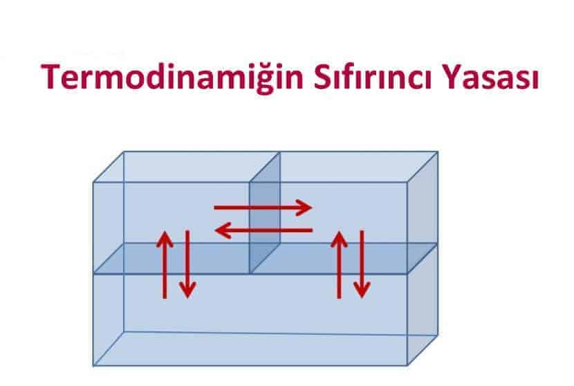

Termodinamiğin Sıfırıncı Yasası
farklı sıcaklıklara sahip iki cisim arasında ısı alışverişine dayalı bir temas olursa sıcak olan cisim soğur, soğuk olan cisim ısınır. İşin temelinde, iki farklı sıcaklığa sahip iki cisim arasında gerçekleşen ısı akışının sıcak cisimden soğuk cisme doğru gerçekleştiği gerçeği yatar. Bazı soğuk cisimlerin sıcak, bazı sıcak cisimlerin de soğuk algılanması mümkündür. Örneğin –30° sıcaklık, kategorik olarak soğuk sınıfında düşünülebilirse de –50°ye göre daha sıcaktır. Isı akışının soğuktan sıcağa doğru olmayışının temeli şudur: Sıcaklık; malzeme atomlarının -daha doğrusu elektronlarının- kinetik enerjisine etki eden bir faktördür.
